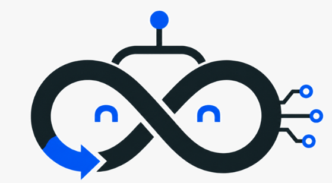

你的终端，你的模型。
配置 API 地址与 Key，自选提供商和模型，并将个人指令保存到 ~/.loop。

Loop ROS0.0.1LOOP ROBOT OPERATING SYSTEM
在一个终端中完成机器人工作流程。与 Master 对话，在仿真中探索，并用执行反馈推动下一次迭代。
终端交互，自选模型，默认仿真。
Loop ROS v0.0.1
Master · qwen-plus
模式 · 仿真 / 真机运动禁用
❯ 打开一个仿真工作空间。
● Master
从本地 MuJoCo 场景开始。
观察、执行、评审、迭代。
❯
界面示意 · 非实时执行精简内核，完整反馈流程。
Master 协调工作，工具在权限范围内执行，评审记录实际发生的结果。
配置 API 地址与 Key，自选提供商和模型，并将个人指令保存到 ~/.loop。
支持 MuJoCo 场景、轨迹工具、可选的 Mink 运动学与策略服务编排。重型依赖按需安装。
Episode 与 Review 让执行结果可检查。工具返回成功，不等于任务已经完成。
真机运动默认禁用，硬件访问受权限控制。尚未提供自动模型训练或通用机器人操作能力。
一条命令安装，输入 LOOP 开始。
Linux/macOS 可直接在终端下载安装。Windows 可选择 PowerShell 或 CMD 命令。安装器支持 Python 3.8+ 启动，并通过 uv 自动创建独立的 Python 3.12 环境。
curl -fsSL https://loopmaster.box2ai.com/LoopROS/install.sh | sh已验证 Linux 下通过 Python 3.8 引导 uv Python 3.12 环境完成安装。
安装后打开新终端，运行 loop 或 loop ros。Linux/macOS 如有提示，请将 ~/.local/bin 加入 PATH。
以当前上下文与工具能力，为机器人持续学习打下基础。